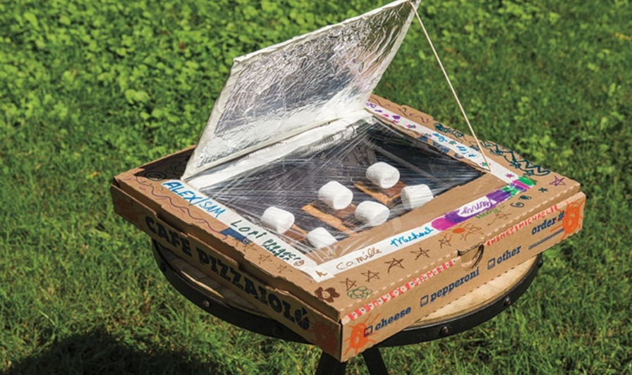

# DIY Box Solar Oven / Solar Cooker

build your own solar oven
Tested designs regularly reach **130–165 °C** in strong sun (Kathmandu / similar latitude & altitude performs very well Apr–Oct).
Features
Double-glazed transparent lid
Good insulation → holds heat even when sun is partly blocked
Great for off-grid, camping, emergencies, eco-living
Two Versions
| Version | Difficulty | Cost est. | Max temp (good sun) | Build time | Best for |
|----------------------|------------|-----------|----------------------|------------|----------------------|
| Basic Pizza-box | Very easy | $5–15 | 80–110 °C | 1 hour | Kids, demos, testing |
| Real Cooking Box | Moderate | $40–120 | 130–165 °C | 1–2 days | Serious cooking |
This repo focuses on **Version 2 – Real Cooking Box**.
Aluminum foil tape or reflective mylar emergency blanket
Flat black paint (non-toxic, heat resistant) or black poster board
Glazing
Tempered glass or polycarbonate sheet 4–6 mm thick (≈ 60×60 cm) × 2 sheets
OR double glazing unit if you can source cheaply
High-temperature silicone sealant
Reflector
4–6 mm plywood or hardboard (~100×100 cm)
Mylar / aluminum foil (shiny side out)
Hinges + angle bracket / strut to adjust angle
Step-by-Step Build Instructions
1. **Build the insulated outer box**
- Cut plywood → bottom + 4 sides
- Cut insulation foam to fit inside snugly
- Glue / screw foam inside the plywood box
- Line the inner faces of the insulation with aluminum foil (reflective side facing in)
2. **Create inner cooking chamber**
- Build a smaller plywood / cardboard box that sits inside (or directly line the insulation)
- Paint inside completely flat black (absorbs best)
- Leave ~3–5 cm air gap between inner chamber and outer walls for extra insulation
3. **Make the glazing lid**
- Build a simple frame (wood or aluminum) that fits on top of the box
- Install first sheet of glass/polycarbonate → seal edges with silicone
- Add 10–20 mm air gap → install second sheet
- Seal very well — air leaks kill performance
- Add weather-stripping / felt on the box rim so lid seals tightly
4. **Add reflector panel**
- Cut plywood/masonite square
- Cover one side completely with stretched, smooth mylar or foil
- Attach to back/top edge of box with hinges
- Add adjustable prop (stick / threaded rod + wingnut) so you can tilt reflector 0–60°
5. **Final touches**
- Paint outside of box white / silver (reflects sun, stays cooler)
- Add carrying handles
- Optional: small thermometer port (drill hole + cork)
How to Use
Place in direct sun (no shadows)
Face box toward sun; adjust reflector so bright spot falls on black pot
Every 30–60 min: re-orient box + reflector (or use manual tracker)
4
Put food in black pot → place in center → close lid tightly
Made with ❤️ in the spirit of open-source appropriate technology.